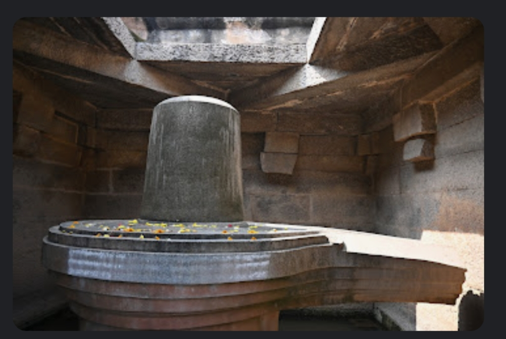
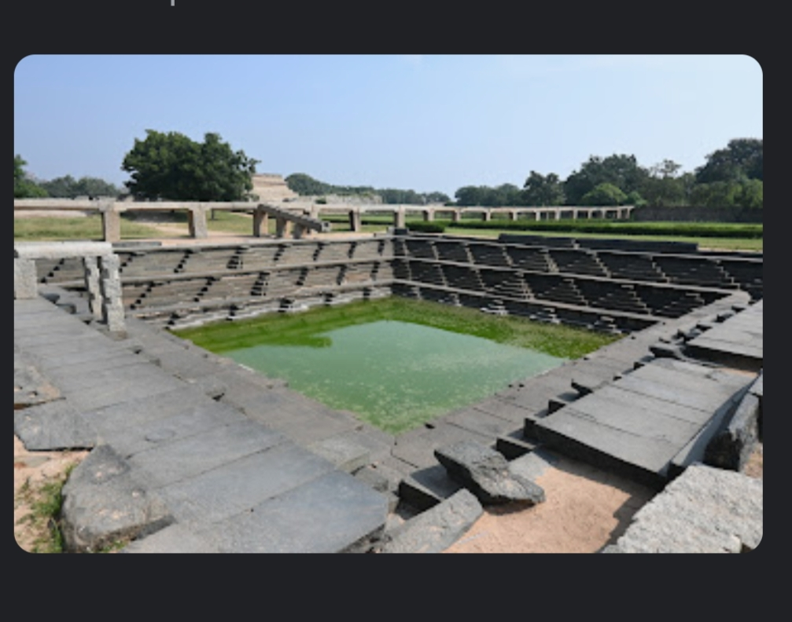
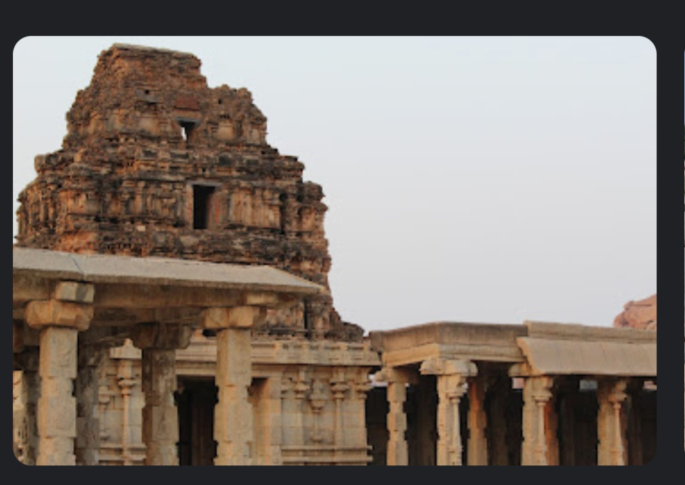
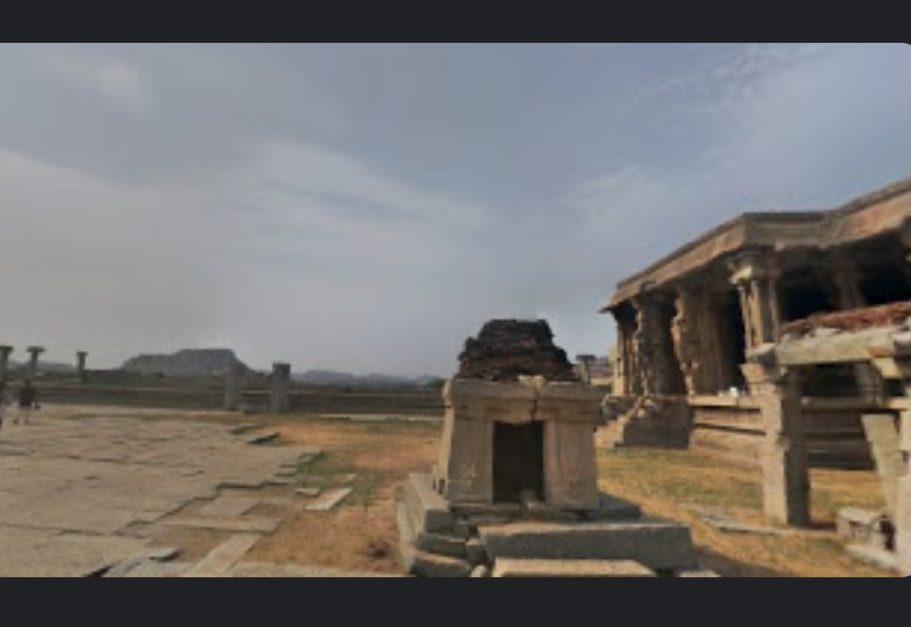
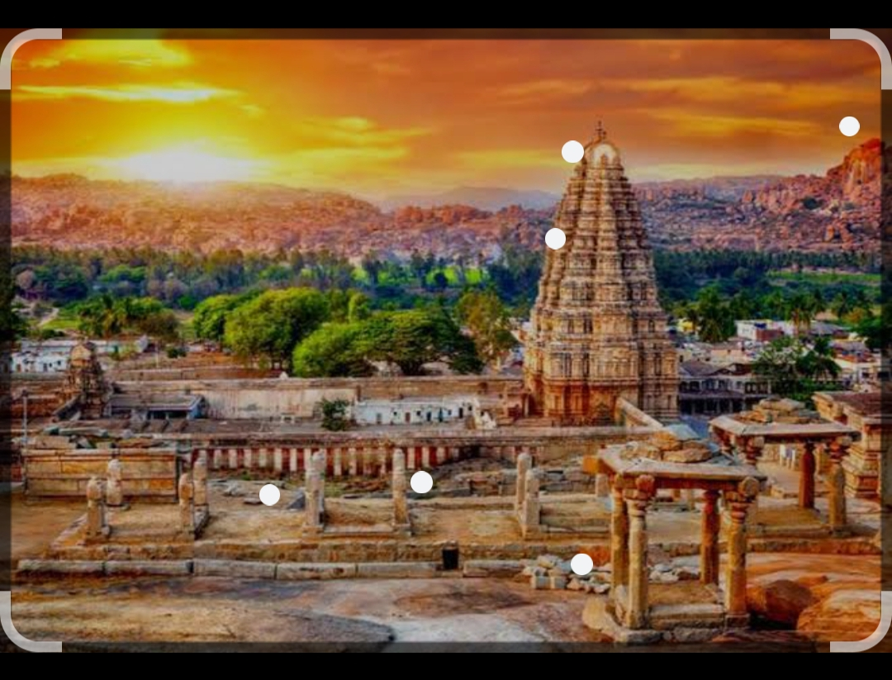
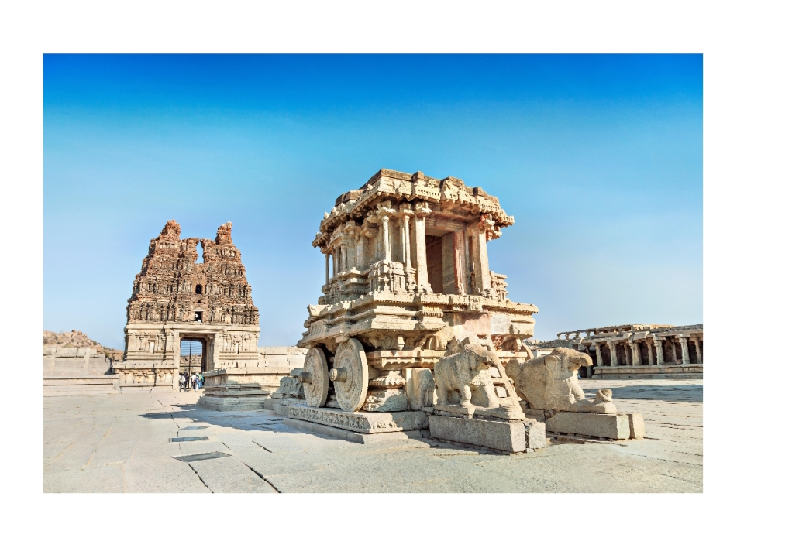
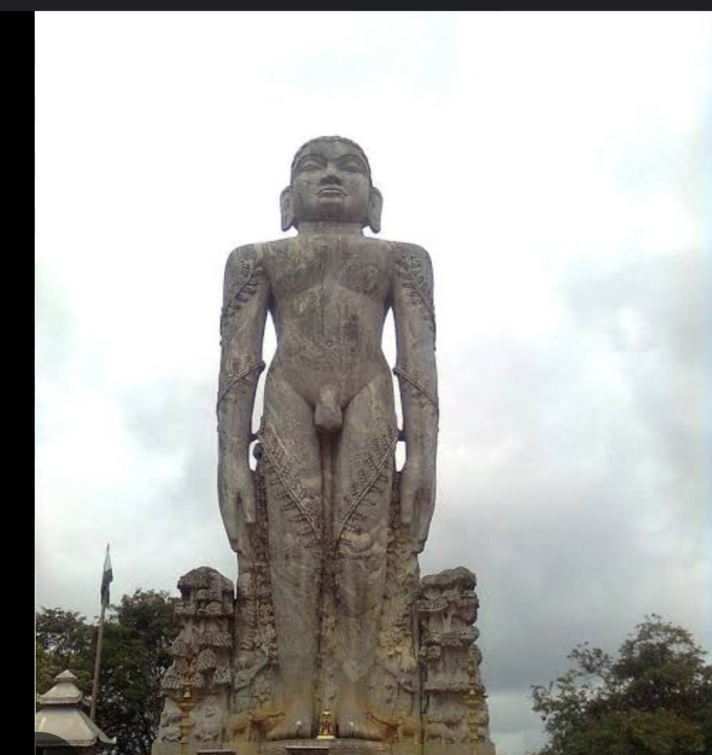
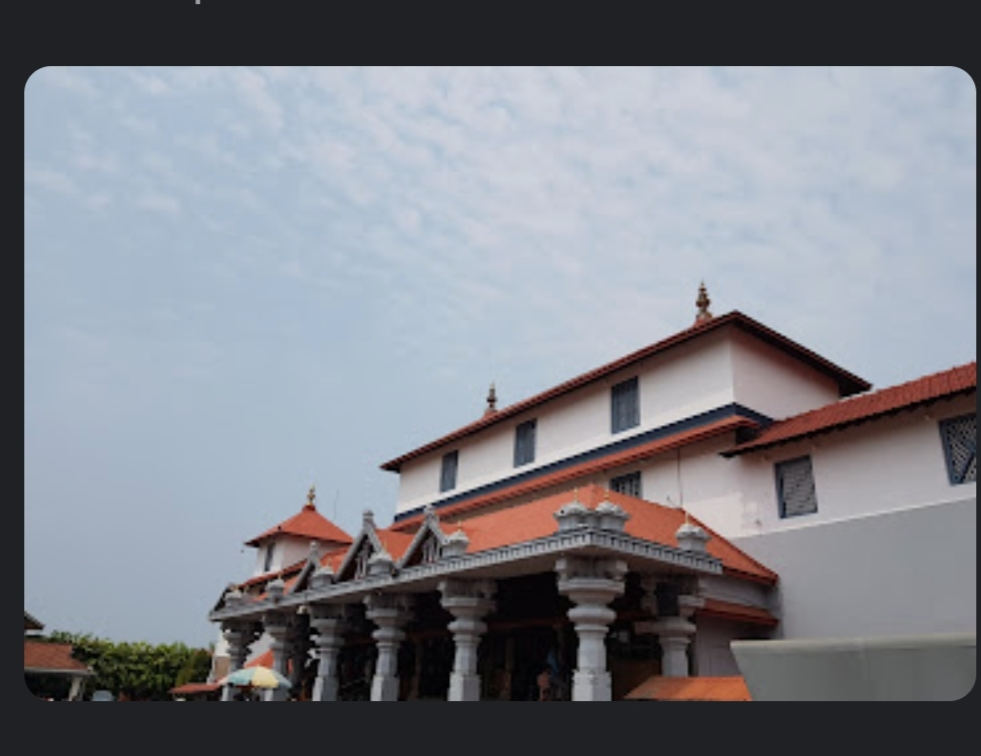
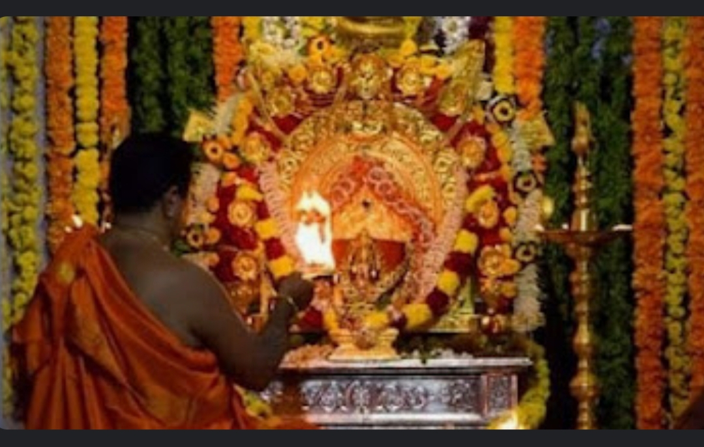
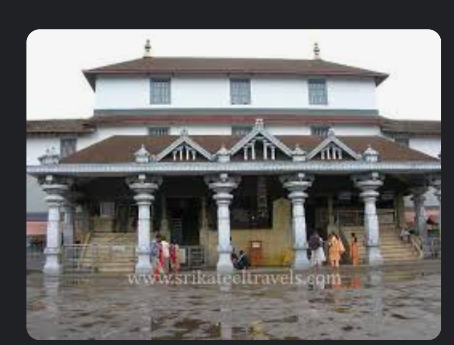

My self Mahadevaiah M B i am graduated from vtu university belagavi and working as a hardware maitainace and support engineer in RUHM innovation,Tumkur.My travel experience is little bit poor because i am not passinate about travelling
HAMPI Historical place (Date:24-may-2020)
I visted with my family its good place we looking that place told the story of our histroy but all monuments are destroyed.In temple Lord virupaksha,a form of shiva we pray god and visited kalinna ratha is made up of stone and river Thungabhadra is flowing through Hampi.Tungabhara dam also their we visited lookig amazing experince and spent time with family is goood.





Dharmasthalla (2016)
I am visited with our friends in Dharmasthalla lord Manjunatha swami is their is cool place we visited in rainy season is good place to visit.The river netravathi river flowing we take bath in ithe river and visitig to pray god and take Anna prasada in temple.its a good place to visit nature in road side fell us happy to travel cool place visiting every year once nice experience





Shivagange(2023)
i am visitig with pour family its good place lord Gangadhareshwara is their in temle in the form of shiva linga we pray god and mountain is their its about 4.5km we are trucking that maountain i6ts good experience to trucking.In middle of the mountain valakalu thertha is their in top of the mountain is good to see around the mountain its good experience.In near teple pathala ganga is their river flowing through middle of rocks good experience